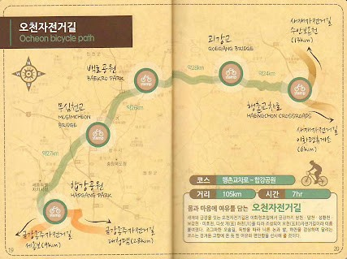

| 코스명 | 오천 자전거길 |
| 코 스 | 행촌교차로~괴강교~백로공원~무심천교~합강공원 |
| 거 리 | 105km |
| 시 간 | 7시간 00분 |

이번 라이딩은 지난번 새제길에서 행촌교차로를 들러 인증을 하였기 때문에 괴산의 괴강교부터 라이딩을 시작하였으며, 합강공원까지 오천자전거길을 완주한 후 대청댐까지 보너스 라이딩을
실시하였습니다.
괴강교부터 합강공원까지는 대부분 강을 따라 자전거 전용도로가 형성되어 어려움 없이 라이딩 할 수 있었습니다.
백로공원까지 일정보다 빨리 도착하여 무심천교 인증센터인 근처에서 점심을 하기로 하고 약간의 보급만 한채 길을 나섰습니다.
처음에는 가을 바람이 선선하여 라이딩이 괜찮았는데 정오가까이 되면서 기온이 올라 조금은 힘든 라이딩이 되었습니다.
합강공원까지 무사히 오천자전거길을 마무리하고 보너스로 대청댐을 향해 고고싱~
아 만만치 않은 라이딩이었습니다. 이미 합강공원까지 함을 모두 소진한 상태에서 대청댐 앞까지 겨우겨우 도착했는데 마지막 관문인 대청댐 업힐코스가 우리를 기다리고 있었습니다.
대청댐 밑에서 다시 마음을 가다듬고 도전!! 업힐을 하여 마지막 힘을 모두 소진하여 대청댐 인증센터까지 겨우 겨우 도장깨기를 완수 할 수 있었습니다.
돌아오는 길은 처음에는 세종으로 복귀를 하여 하였으나 대전 복합터미널로 방향을 변경하여 복귀를 하였는데 처음부터 끝까지 다운힐과 평지로 마지막 마무리를 쉽게 할 수 있었습니다.
(대청댐은 무조건 대전복합터미널로 복귀 "강추"입니다.)